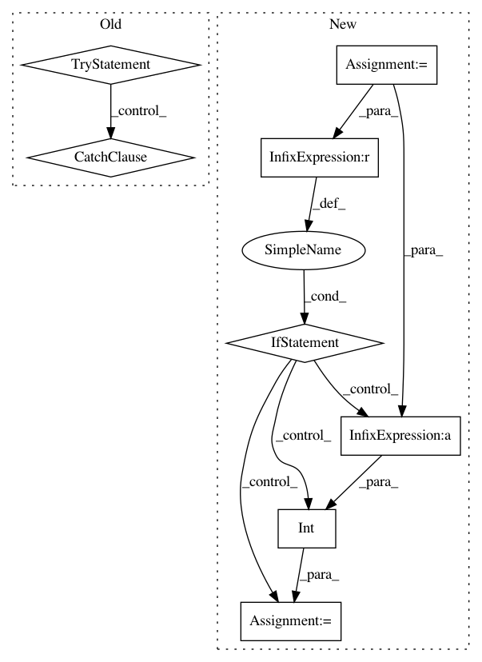

9ef50183c43700fea3bfbacaa70b2283631373e8,pymc/progressbar.py,ProgressBar,animate_ipython,#ProgressBar#Any#,35
Before Change
// time.sleep(0.5)
def animate_ipython(self, iter):
try:
clear_output()
except Exception:
// terminal IPython has no clear_output
pass
print("\r", self, end="")
sys.stdout.flush()
self.update_iteration(iter)
After Change
def animate_ipython(self, iter):
elapsed = time.time() - self.start
iter = iter + 1
if elapsed - self.last > .5 or iter == self.iterations:
self.last = elapsed
self.update_iteration(iter)
fraction = int(100*iter/float(self.iterations))
display(Javascript("$("div//%s").width("%i%%")" % (self.divid, fraction)))
display(Javascript("$("label//%s").text("%i%% in %.1f sec")" % (self.sec_id, fraction, round(elapsed, 1))))
def update_iteration(self, elapsed_iter):
self.__update_amount((elapsed_iter / float(self.iterations)) * 100.0)
self.prog_bar += " %d of %s complete" % (elapsed_iter, self.iterations)
In pattern: SUPERPATTERN
Frequency: 3
Non-data size: 8
Instances
Project Name: pymc-devs/pymc3
Commit Name: 9ef50183c43700fea3bfbacaa70b2283631373e8
Time: 2013-04-14
Author: jsalvatier@gmail.com
File Name: pymc/progressbar.py
Class Name: ProgressBar
Method Name: animate_ipython
Project Name: home-assistant/home-assistant
Commit Name: 0c91ba4a50e58734553bfb00fad5a3abab8abe43
Time: 2016-08-23
Author: nkgilley@gmail.com
File Name: homeassistant/components/media_player/gpmdp.py
Class Name: GPMDP
Method Name: update
Project Name: soft-matter/trackpy
Commit Name: b1316a19bc2c0ad8647b523cafcb0516754869f8
Time: 2012-09-17
Author: tcaswell@gmail.com
File Name: trackpy/tracking.py
Class Name: Hash_table
Method Name: get_region